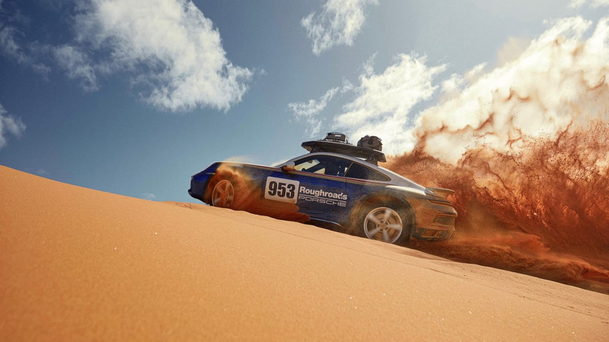
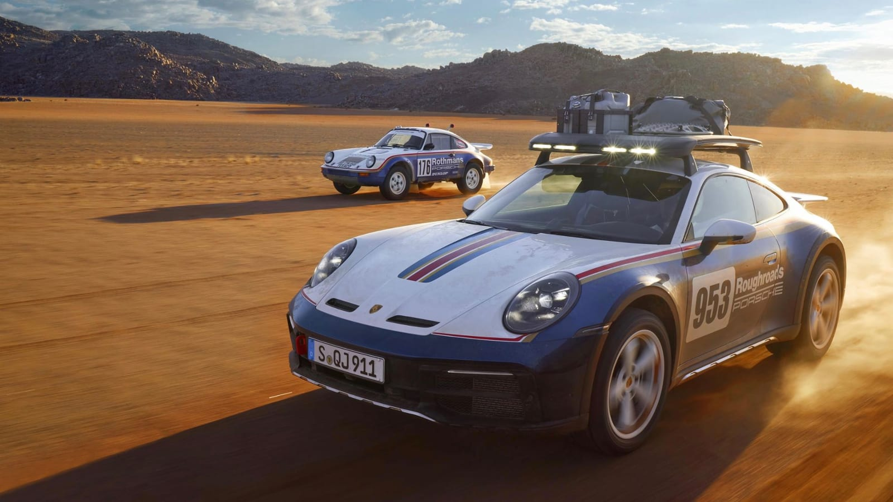
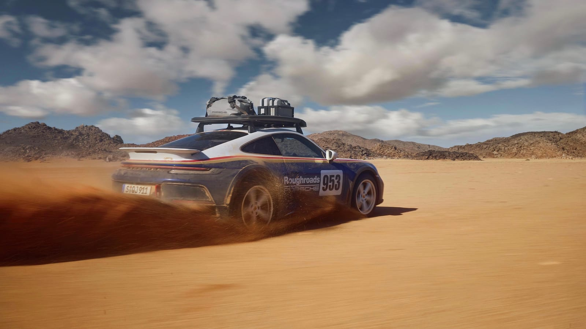

Rise to the occasion.
A standard ride height 50 mm above a Carrera with sports suspension. Another 30 mm of lift when the terrain calls for it.

THE 2024 PORSCHE 911 DAKAR
Some roads are worth leaving.
A sports car with a very different sense of direction.
The best way to celebrate a legend?
Get it dirty.
The 2024 911 Dakar takes the silhouette you know and sends it somewhere unexpected. Past the last stretch of asphalt. Into the gravel. Across the dunes. Still unmistakably a 911, with a whole new world to explore.
Find your terrain ↗Every detail has a job.
Especially when the road doesn't.

A standard ride height 50 mm above a Carrera with sports suspension. Another 30 mm of lift when the terrain calls for it.
Purpose-developed Pirelli Scorpion All Terrain Plus tires. Reinforced sidewalls, deep tread, and the confidence to leave smooth surfaces behind.
Stainless steel protection and red aluminum towing eyes bring function to the familiar form. All-wheel drive puts the power to work.
Offroad mode raises the suspension automatically and prioritizes traction. More clearance. Stronger differential locking. A 911 ready to explore beyond the asphalt.
Explore the engineering. This is a mode guide, not a vehicle configurator.
In 1984, Porsche took its first overall Paris-Dakar victory. Decades later, that rally spirit lives in a road-going 911 with an appetite for the extraordinary.
The optional Rallye Design Package carries that story forward in White and Gentian Blue Metallic, with red and gold stripes and unmistakable Roughroads lettering.

A seriously capable sports car.
However you measure it.
Manufacturer figures. Specifications refer to the original 911 Dakar; equipment and market specifications may vary. Chassis source ↗
THE WORLD IS BIGGER THAN THE ROAD.